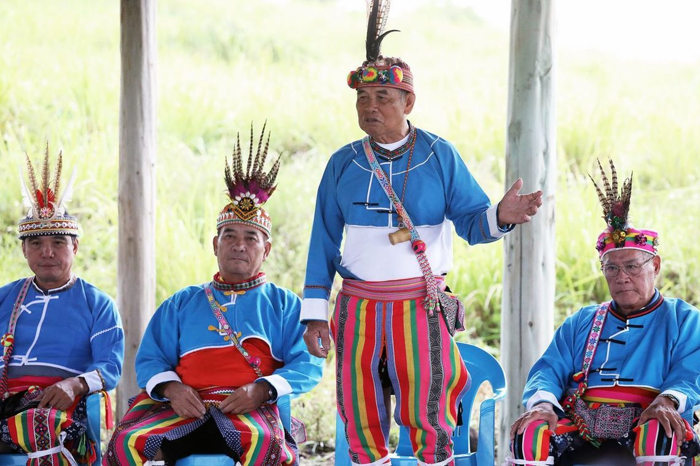
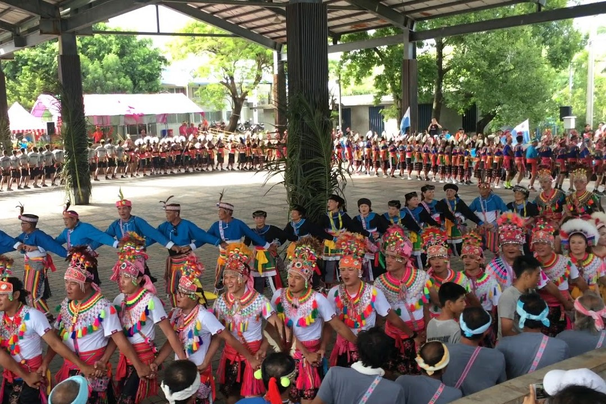
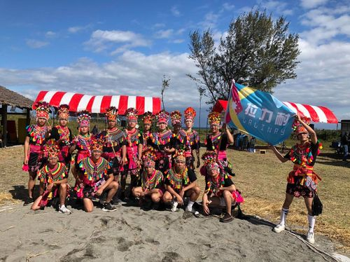
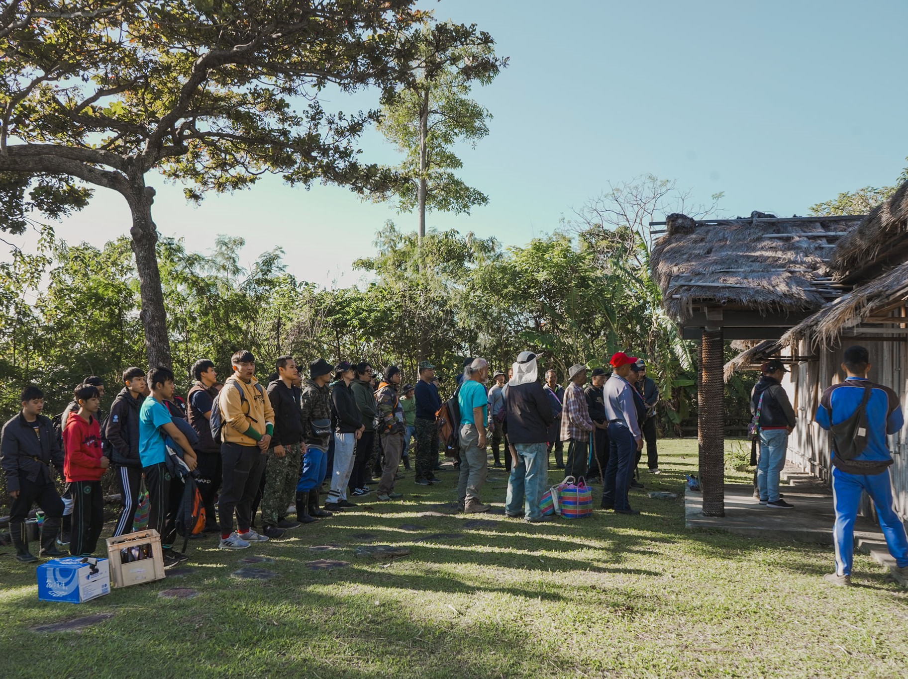
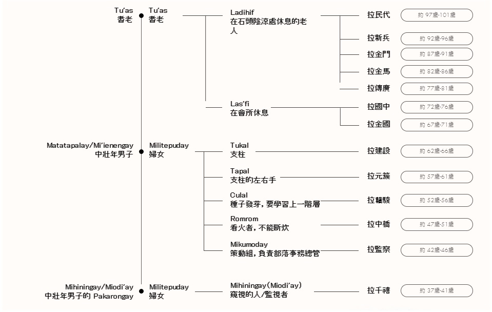
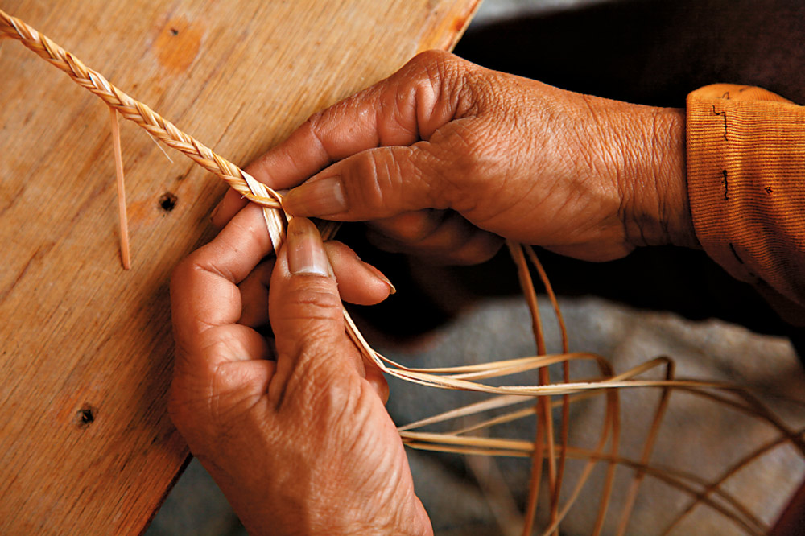

在阿美族社會中，年齡階層相當具有歷史與文化涵養，其中都蘭部落的階層制度是目前保存的最完整的部落之一。 依照長幼年紀劃分，都蘭部落的年齡階層主要可以分為兩個類型，一是『 Malikoda'ay 跳舞的人 』年紀約為12歲到36歲， 另一個是『 Malitengay靠近祖先的人 』年紀約在37歲以上，不同的年齡組在不同的年齡階段中分擔部落裡不同的大小事務， 換言之身為部落族人，當到達不一樣的年紀時便要承擔不一樣的責任。
每年6~8月的豐年祭是阿美族一年一度的盛事。不論在地的或旅居在外的，通通回到部落參加。 除了祭祀祖靈、慶祝豐收之外，豐年祭還起到了確立階級、敬老尊賢、讓年輕男女認識對象的作用 都蘭阿美族內對於勞動年齡的階層都有嚴格的分級，以5~10歲為一個階層。最基層的「巴卡路耐」， 在整個祭祀期間都必須為長輩服務、敬酒且還要整理會場，長輩也會藉機觀察年輕人是否有耐心或具備領袖資質。
巴卡路耐，指的是從十二歲開始到邁入成年前的部落青年。在以前，他們必須在部落中從事各種勞動，並學習部落文化與技能， 大約四五年之後，耆老才會判斷孩子們是否有資格成年，然後舉辦成年式。然而近代部落青年人口流失，Pakarongay訓練一度成為歷史。 直到1995年，都蘭部落與政府機關、學生團體合作推動文化重振的活動，以文化訓練營的方式重新舉辦了Pakarongay訓練， 會於豐年祭前舉辦，讓年輕人重新認識部落傳統儀式、生活技能與價值觀，凝聚部落向心力，並讓傳統文化能夠傳承下去。
獵祭顧名思義是狩獵的祭典，先民狩獵時間是利用農閒之時，上山打獵，以補足生活所需的蛋白質、肉類等營養， 也由於靠山吃山的智慧，狩獵時也有一套嚴格的標準以及追蹤獵物的技巧，透過祭典等方式，代代相傳下來。
講到命名儀式就必須先介紹阿美族的『創名制』以及『通名制』，所謂創名制也就是每五年當Pakalongay（青少年） 要升級成為Kapah（青年）時，部落長老會根據當時五年中代表的人事物給予級名（通常以“ La拉 ”為開頭命名） 。 而通名制則是以年齡為區分分為Tu'as（耆老）、Matataparay（壯年）、Malikoda'ay（青少年）， 每一個階段都有其通用的職級名稱以來示意在到達不同年齡時所要負起的責任。
在都蘭國裡，因應大自然賜予的美麗環境，人們在這耕作、編織、採集、創作、甚至是觀星以及釀製等， 透過自己擅長的形式來幻化對這塊土地的情感。於是都蘭國集合了部落內臥虎藏龍的職人們，藉由他們的創作，一窺都蘭的樣貌， 也透過他們的故事，刻畫出屬於都蘭的日常生活。